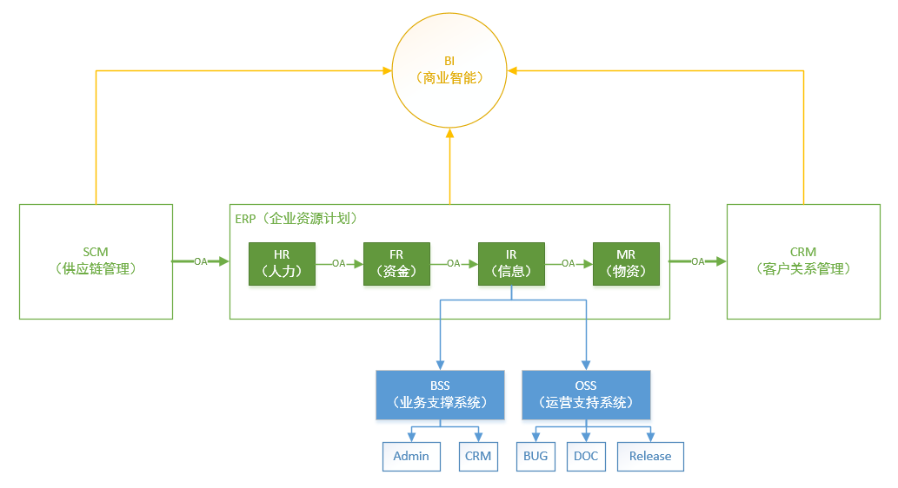

系统分析
包含需求和分析两大子项, 确定做什么和不做什么的关键.
系统类型

数据模型
- 概念模型
- 仅定义实体之间的关系和主键
- 逻辑模型
- 必须使用
Domains来指定属性
- 必须使用
- 物理模型
- 配置自增类型字段；所有字段都必须指定
NOT NULL，设置默认值，且不填零 - 原则上只允许使用
Byte、Interger、Varchar三种数据类型，尽量不要用TextByte、Interger两种类型必须指定Unsigned，不允许负值和浮点数，默认值为0- 状态使用
Byte类型，不要使用Enum - 时间使用
Interger类型，不用Timestamp。PHP的time()和mysql的Timestamp是两个概念 Varchar的长度按照 2 的倍数增加，最高值1024，默认值为``（空字符串）Text仅用于Varchar长度大于1024的情况
- 配置自增类型字段；所有字段都必须指定
| 许可类型 | 字节 | 范围 | 备注 |
|---|---|---|---|
| Byte(TINYINT) | 1 字节 | (0, 255) | 用于各种状态 |
| Interger(INTEGER) | 4 字节 | (0, 4 294 967 295) | 编号，最小值10000 |
| Variable Characters(VACHART) | 8, 16, 32 … | …256, 512, 1024 | 不定长字符串 |